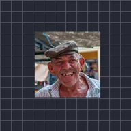

ফেস ট্র্যাকিং

ভিডিও লেয়ারের জন্য ফেস মোশন: ভিডিওটি সরে ও জুম হয় যাতে আপনার বাছা মুখ ফ্রেমের একই জায়গায় থাকে। মুখ বাছুন-এ ট্যাপ করুন, তারপর প্রিভিউতে একটি মুখে ট্যাপ করুন। মুখটি পুরো ক্লিপে একবার অনুসরণ করা হয় এবং ফলাফল রেখে দেওয়া হয়, তাই প্রিভিউ ও এক্সপোর্ট সঙ্গে সঙ্গে সেটি ব্যবহার করে। জুম ঠিক করে মুখ কত বড় থাকবে (100% মানে বাছার সময়ের আকার), পজিশন ঠিক করে ফ্রেমের কোথায় থাকবে, আর স্মুথিং চলাচলকে আরও স্থির করে।
সেটিংস
| সেটিং | ধরন | রেঞ্জ | ডিফল্ট |
|---|---|---|---|
| জুম | সংখ্যা | 10% থেকে 1000% | 100% |
| পজিশন | পয়েন্ট (X, Y) | 0 থেকে 1 | 0.5, 0.5 |
| স্মুথিং | সংখ্যা | 0% থেকে 100% | 30% |